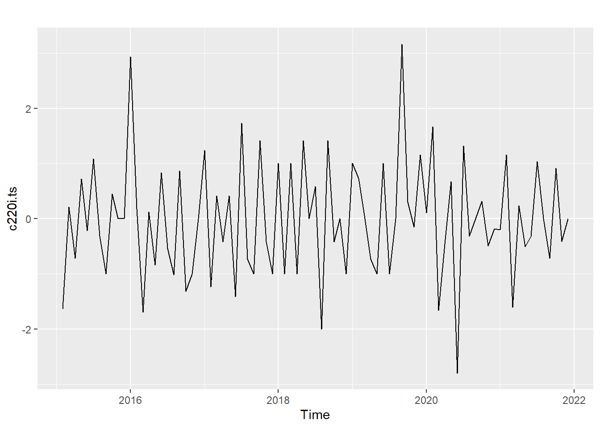
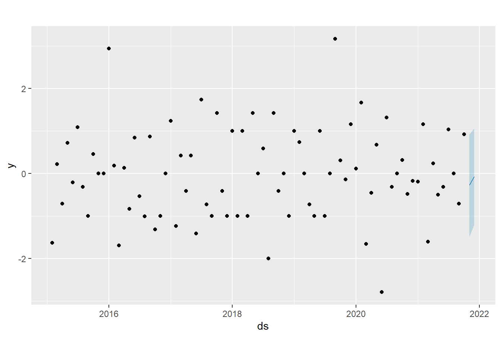
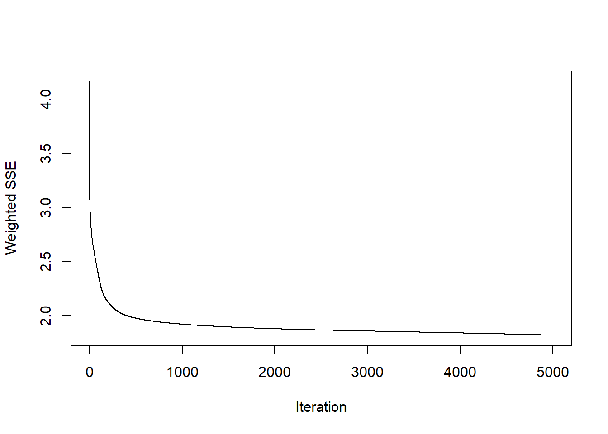
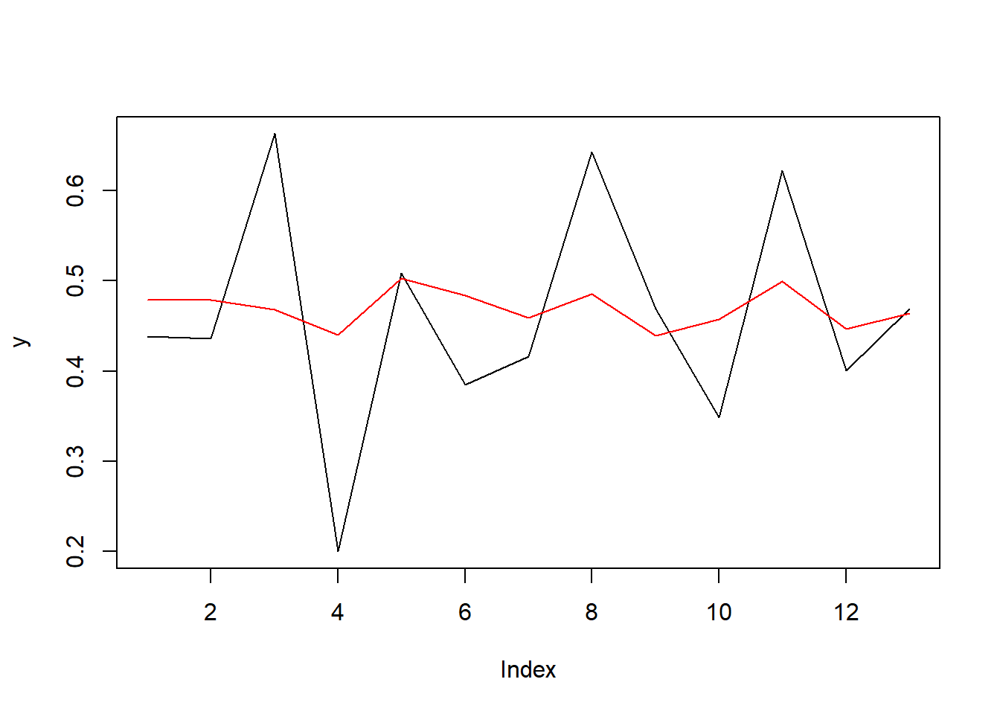

Chapter 6 Modelo Facebook Prophet
Para comenzar, se retoma la gráfica de la variable de Casos de Dengue Grave transformada a través del operador diferencia y rezagada un periodo.

Ahora, se realiza una partición de la serie para contar con un subconjunto de prueba y otro de entrenamiento. Se eligió realizar un pronóstico de corto plazo, dada la variabildad histórica y los elementos de contexto de la vigilancia epidemiológica.
6.1 Regresión Univariada
Se ajustan dos modelos: un modelo ARIMA y el otro basado en el algoritmo Prophet.
Disabling weekly seasonality. Run prophet with weekly.seasonality=TRUE to override this.Disabling daily seasonality. Run prophet with daily.seasonality=TRUE to override this.Se observa el pronóstico del modelo Prophet, incluyendo un intérvalo de confianza.

Se calculan las métricas de desempeño para los dos modelos.
Model MAE RMSE
1 ARIMA 0.06609547 0.09347311
2 Prophet 0.10732330 0.11193692En este caso, sorprende que el que tenga mejor comportamiento sea el modelo ARIMA. En otras prubas realizadas en la etapa de preparación, el modelo Prophet tuvo un mejor desempeño, aunque por poco.
A continuación se presenta una gráfica de los pronósticos de los dos modelos.

Aquí se validaría la necesidad de incorporar otras variables predictoras, de modo que se pueda aprovechar más las capacidades del algoritmo Prophet.
6.2 Regresión Multivariada
Después de realizar un preprocesamiento similar al aplicado para la variable de respuesta, se procede a incorporarlas tres variables predictoras en los dos modelos. Las covariables seleccionadas están basadas en los trabajos previos a nivel internacional, los cuales validan la relevancia de los datos de lluvia, temperatura y precipitaciones para la predicción de los casos de dengue.
Disabling weekly seasonality. Run prophet with weekly.seasonality=TRUE to override this.Disabling daily seasonality. Run prophet with daily.seasonality=TRUE to override this. Model MAE RMSE
1 ARIMA 0.20100128 0.2379388
2 Prophet 0.01893571 0.0228082Como se puede observar, en este caso el desempeño del modelo Prophet supera con creces el obtenido por el modelo Arima. Esto confirma la relevancia de la inclusión de las covariables precipitación, lluvia y temperatura.

6.3 Conclusión sobre regresión
Llegado este punto, se podría decir que después de realizar un proceso de manipulación efectiva, los registros de Casos de Dengue Grave en Cali se convierten en una serie de tiempo viable para utilizar los enfoques de regresión, toda vez que no representa una variable categórica, evidencia una dinámica estacionaria, se evidencia una relación continua con las variables predictoras, de modo que los cambios en las covariables están relacionados con los cambios en la cantidad de casos de dengue grave, y el desempeño logrado, especialmente por el algoritmo Prophet resulta satisfactorio.